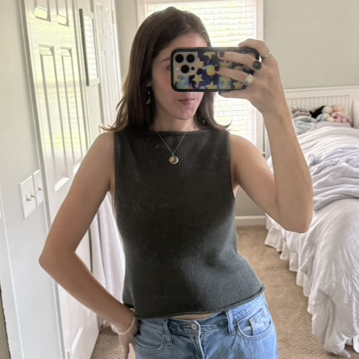
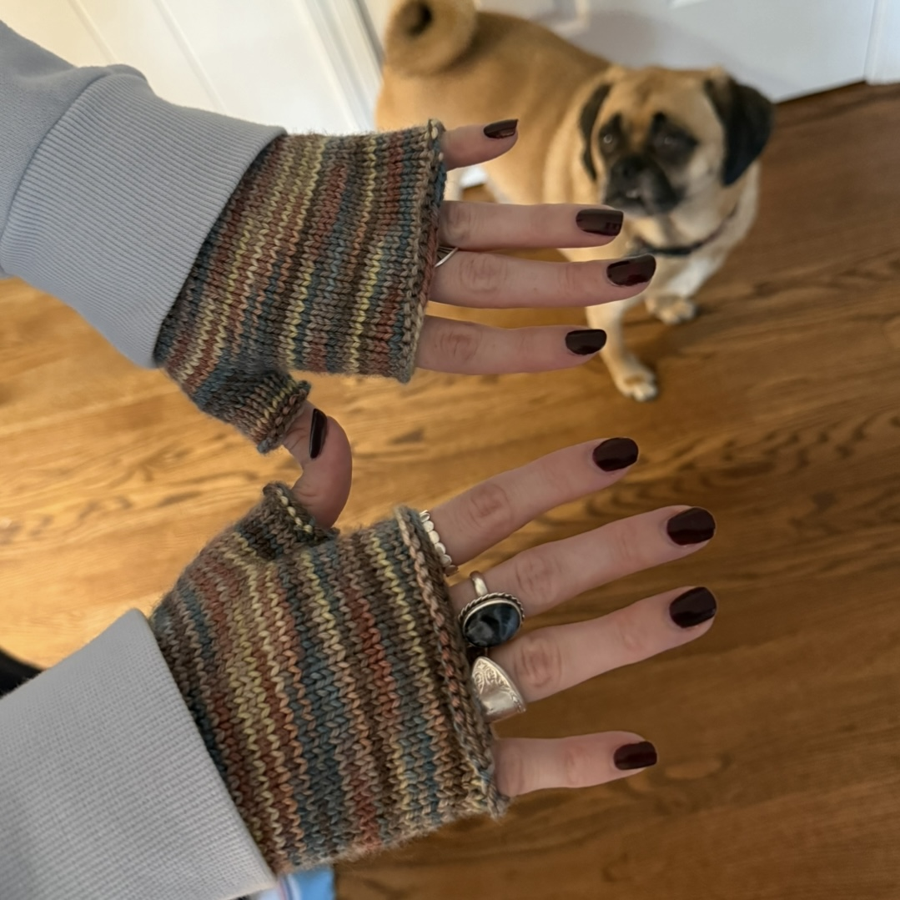
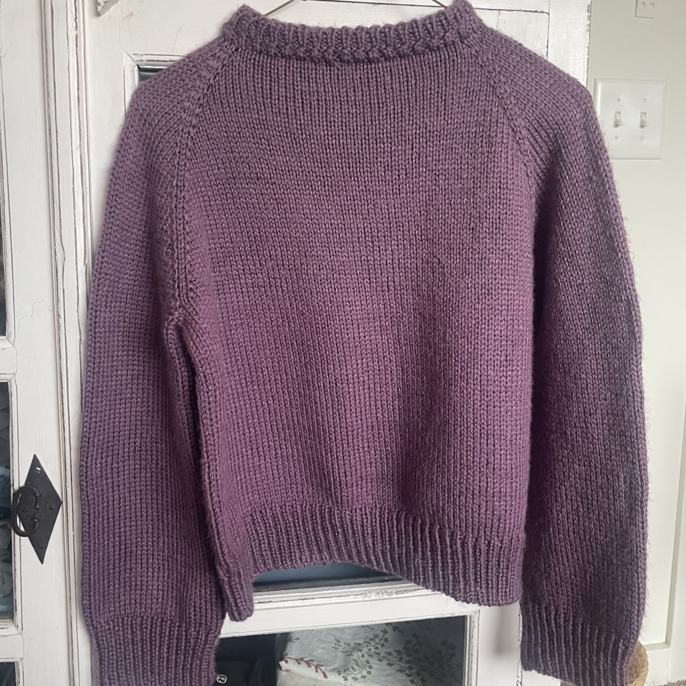

<!DOCTYPE html>
<html lang="en">
  <head>
    <meta charset="UTF-8" />
    <meta name="viewport" content="width=device-width, initial-scale=1.0" />
    <title>Whisker Knits</title>
    <link rel="preconnect" href="https://fonts.googleapis.com">
    <link rel="preconnect" href="https://fonts.gstatic.com" crossorigin>
    <link href="https://fonts.googleapis.com/css2?family=Bodoni+Moda:ital,opsz,wght@0,6..96,400..900;1,6..96,400..900&display=swap" rel="stylesheet">
    <link rel="stylesheet" href="https://cdn.jsdelivr.net/npm/picnic">
    <link rel="stylesheet" href="https://cdnjs.cloudflare.com/ajax/libs/font-awesome/7.0.1/css/all.min.css" crossorigin="anonymous">
    <link href="https://fonts.googleapis.com/css2?family=Averia+Serif+Libre:ital,wght@0,300;0,400;0,700;1,300;1,400;1,700&family=Crimson+Text:ital,wght@0,400;0,600;0,700;1,400;1,600;1,700&family=Lora:ital,wght@0,400..700;1,400..700&display=swap" rel="stylesheet">
    <link rel="stylesheet" href="css/complete.css" />
  </head>
</html>

    <nav class="demo">
        <a href="#" class="brand">
            <span><i class="fa-solid fa-cat"></i> Whisker Knits</span>
        </a>
        <input id="bmenub" type="checkbox" class="show">
        <label for="bmenub" class="burger pseudo button"><i class="fa-solid fa-bars"></i></label>
        <div class="menu">
            <a href="home.html" class="button icon-puzzle">Home</a>
            <a href="wip.html" class="button icon-puzzle">WIP</a>
            <a href="notes.html" class="button icon-puzzle">Nora’s Notes</a> 
            <a href="https://www.ravelry.com/people/norahobbs03" class="button icon-puzzle">My Ravelry</a>
        </div>
    </nav>

    <main class="finished-page">
        <div class="finished-item">
            
            <div class="project-info">
                <h2>Sophie Scarf for Aurora</h2>
                <p><strong>Pattern:</strong> 
                    <a class="links" href="https://www.petiteknit.com/en/products/sophie-scarf">Sophie Scarf by Petite Knit →</a>
                </p>
                <p><strong>Yarn:</strong> 
                    <a class="links" href="https://sirdar.com/en/products/sirdar-cashmere-merino-silk-dk">
                Sirdar Cashmere Merino Silk →
                </a>
                </p>
                <p><strong>Colorway:</strong> China Blue</p>
                <p><strong>Started:</strong> December 6, 2025</p>
                <p><strong>Finished:</strong> December 9, 2025</p>
                <div class="bean-rating">
                    <strong>Bean’s Yarn Rating:</strong>
                    <span class="paws">🐾🐾🐾🐾🐾</span>
                </div>
            </div>
        </div>


    <div class="finished-item">
        

        <div class="project-info">
            <h2>Summer Tank</h2>

            <p><strong>Pattern:</strong> 
                <a class="links" href="https://myfavouritethings-knitwear.com/products/camisole-no-10-english?_pos=1&_sid=714b99d22&_ss=r">Camisole No. 10 by My Favorite Things Knitwear</a>
            </p>
            <p><strong>Yarn:</strong> 
                <a class="links" href="https://knittingforolive.com/products/knitting-for-olive-cotton-merino-dark-sea-green"> Knitting for Olive Cotton Merino</a>
            </p>
            <p><strong>Colorway:</strong> Dark Sea Green</p>
            <p><strong>Started:</strong> June 29th, 2025</p>
            <p><strong>Finished:</strong> August 7th, 2025</p>

            <div class="bean-rating">
                <strong>Bean’s Yarn Rating:</strong>
                <span class="paws">🐾🐾🐾🐾</span>
            </div>
        </div>
    </div>

    <div class="finished-item">
        

        <div class="project-info">
            <h2>My Favorite Gloves!</h2>

            <p><strong>Pattern:</strong> 
                <a class="links" href="https://www.petiteknit.com/en/products/penny-gloves"> Penny Gloves by Petite Knit</a>
            </p>
            <p><strong>Yarn:</strong> 
                <a class="links" href="https://www.carodanfarm.com/shopsite_sc/store/html/product10476.html"> Carodan Farm Chincoteague Colors Mariner Collection</a>
            </p>
            <p><strong>Colorway:</strong> Winter Marsh</p>
            <p><strong>Started:</strong> March 18th, 2025</p>
            <p><strong>Finished:</strong> June 15th, 2025</p>

            <div class="bean-rating">
                <strong>Bean’s Yarn Rating:</strong>
                <span class="paws">🐾🐾🐾🐾🐾</span>
            </div>
        </div>
    </div>

    <div class="finished-item">
        

        <div class="project-info">
            <h2>My First Ever Project</h2>

            <p><strong>Pattern:</strong> 
                <a class="links" href="https://www.ravelry.com/patterns/library/step-by-step-sweater"> Step by Step Sweater by Florence Miller </a>
            </p>
            <p><strong>Yarn:</strong> 
                <a class="links" href="https://www.michaels.com/product/lion-brand-heartland-yarn-10640386?cm_mmc=SearchNB-_-google-_-14054781313-_-122692700530&gclid=EAIaIQobChMI79DCvLe2kQMV4xHUAR0GiiofEAAYASAAEgKdMPD_BwE&dev=c&kw=&placement=&match=&target=dsa-395000944709&gad_source=1&gad_campaignid=14054781313&gbraid=0AAAAADkMxxebh_Eb6miS463XDC3ZbhkRT&gclid=EAIaIQobChMI79DCvLe2kQMV4xHUAR0GiiofEAAYASAAEgKdMPD_BwE"> Lion Brand Heartland </a>
            </p>
            <p><strong>Colorway:</strong> 143 Kobuk Valley</p>
            <p><strong>Started:</strong> December 27th, 2024</p>
            <p><strong>Finished:</strong> February 26th, 2025</p>

            <div class="bean-rating">
                <strong>Bean’s Yarn Rating:</strong>
                <span class="paws">🐾🐾</span>
            </div>
        </div>
    </div>

    
    </main>

    <footer>Whisker Knits by Nora and Binns</footer>
